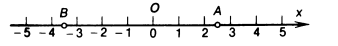
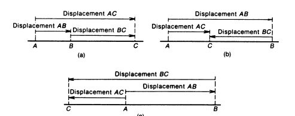
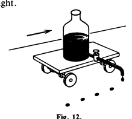
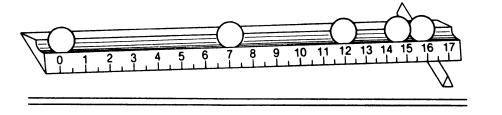

To describe the motion of a body, we must know how its various points move. But if a body is in translatory motion, all its points move in the same way. Therefore, to describe a translatory motion it is sufficient to describe the motion of its any points. If different points of a body move differently, it is still possible sometimes to confine the description to the motion of a single point. This refers to the case when we are interested only in the change of the position of the body as a whole, for example, as in the analysis of the flight of a bullet or an aeroplane, the motion of a ship in the sea, the motion of a planet around the Sun, and so on. Thus, while study ing the motion of a planet around the Sun, it is sufficient to describe the motion of its centre.
Consequently, in some cases the description of the motion of a body is reduced to the description of the motion of a point. Various types of motion of a point differ first of all in the shape of the trajectories. If the trajectory is a straight line, the motion of the point is referred to as rectilinear (motion in a straight line). If the trajectory is a curve, the motion is said to be curvilinear. The motion of a body as a whole can be treated as rectilinear or curvilinear only if we can limit ourselves to a description of motion of a single point of the body. Generally speaking, some points of a body can move in straight lines, while its other points are in a curvilinear motion. The motion of a point in a straight line is the simplest type of motion. The next nineteen sections of this book will be devoted to an analysis of this type of motion.
The trajectory of motion indicates all the positions occupied by a point. However, even if we know the trajectory, we cannot say whether the point moved rapidly or slowly on individual segments of the trajectory, whether it stopped or moved continuously, and so on. To obtain a complete description of motion, we must also know at what instant of time the point occupied a certain position on the trajectory. For this purpose, it is necessary to mark all points of the trajectory in a certain way and “cor relate” each point to the moment of time when the moving point passed through this mark.
On railways and highways, such a marking-out is made by installing mileposts along the track. They help to determine at what distance from the initial point a train or a car is. The number on a post passed by the train directly indicates the distances from an initial point which is usually a large city situated on this road.
Let us start with an analysis of the motion of a point in a straight line. In this case, the straight line along which the point moves can be taken as the x-axis with the origin O at an arbitrary point (Fig. 10). Then the posi tion of the point on the trajectory will be determined by the segment laid from point O to a given point (segments OA and OB in Fig. 10). To distinguish points lying on different sides of point O, the position of points for which the segment is laid in the direction of the x-axis is determined by the length of the segment with the plus sign (point A in Fig. 10), while theposition of points for which the segment is laid in the opposite direction is determined by the length of the segment with the minus sign (point B in Fig. 10). The length of the segment taken with the appropriate sign is called the coordinate x of the point. For example, the coordinate of point A in Fig. 10 is xA = 2.5, while the coordinate of point B is xB = - 3.5. Suppose that a point has moved from A t o B (Fig. 11). The segment A B directed from the initial to the final position is called the displacement o f the point. 1 The length of a segment is always expressed by a positive number. We shall call this number the magnitude o f displacement.
If the point made two consecutive displacements A B and BC, the resul tant displacement is A C \ Figure 11 shows that if the displacements being combined have the same direction (Fig. 11a), the direction of the resultant displacement coincides with the direction of the components, and the magnitude of the resultant displacement is equal to the sum of the magnitudes of the components.Jlf, however, the displacements being com bined have opposite directions (Fig. 116 and c), the direction of the resul tant displacement coincides with the direction of the component whose magnitude is larger. The resultant displacement in this case is equal in magnitude to the difference of the magnitudes of the components: magnitude of A C = Imagnitude of A B - magnitude of B C \ . The distance covered by the point along its trajectory is known as the path length. The path length, usually denoted by s 9 is expressed by a positive number. If the direction of motion does not change during some period of time, the path length (in the case of rectilinear motion) coincides with the magnitude of the displacement. If the direction of motion changes, the time interval under consideration (for example, the time *AC during which the point is displaced by AC) should be divided into the intervals during which the direction of motion remains unchanged, the distance covered by the point on each interval should be calculated, and all these path lengths should be added. For example, if in the case depicted in Fig. 11b the direction of motion has not changed over displacements AB and BC, the distance covered during the time ^AC is equal to the sum of the magnitudes of displacements AB and BC. In order to “correlate” the marked points of the trajectory to the moments of time at which the moving point passes through the marks, a certain instant of time is chosen as the initial one, and each position of the moving point on the trajectory is put into correspondence with the time in terval that has passed from the initial moment of time. We shall denote time intervals by t.
On a railroad, this correlation can be made by a passenger on a train, who notes with the help of his watch the instants at which the train passes by mileposts. Such a correlation can also be made by observers on the railroad station who mark with the help of a clock the time when the train passes by a station. Referees of sport events, who record with a stopwatch the instant of time when a skier crosses the finish line or an aeroplane flies over a control point, correlate the position of a moving body on its trajec tory to some instant of time. In this case, the initial moment is the moment of start. At a school laboratory, such a correlation can be made with the help of a dropping bottle (Fig. 12) mounted on a moving body, for example, a cart or a spring toy car. The drops of ink falling in equal time intervals mark the position of the body on its trajectory. The moment corresponding to the falling of a certain drop is taken as the initial instant of time. The stroboscopic method of observation is sometimes used to study the motion. A stroboscope is a device producing intermittent light flashes of short duration at equal intervals of time. A device in which short current pulses cause bright flashes in a special lamp can be used for this purpose. An opaque disc with a slit, rotating in front of an ordinary lamp, also pro duces stroboscopic light.
Fig. 10: Marking of a rectilinear trajectory.
Fig. 11: Composition of displacements: (a) in the same direction and (6) and (c) in opposite direc tions.
Suppose, for example, that the motion of a ball rolling down an in clined trough is studied. If the experiment is carried out in a dark room, and the ball is illuminated by stroboscopic light, the ball will be seen only in the positions where it is illuminated by a flash. If we place a ruler with divi sions along the trough, it will also be illuminated, and the positions of the ball relative to the ruler at the instants of flashes can be registered (Fig. 13). In order to record all the positions of the ball, the pattern can be photographed by a camera with an open shutter throughout the motion. By using a stroboscope, we can see simultaneously a number of dif ferent positions of an object without resorting to a photograph. If several consecutive flashes of a stroboscope occur in 0.1 s, we shall see several con secutive positions of the ball due to the persistence of vision. A similar pat tern can be observed if we rapidly move a bright rod illuminated by a daylight lamp or some other gas-discharge tube. Such lamps fed by an alternating current produce one hundred flashes per second, which allows us to see simultaneously a number of consecutive positions of the rod. One can also see several positions of one’s waving hand in a dark projection room during a film show (24 flashes per second).By “correlating” in some way separate positions of a moving point with the instants of time, we obtain a complete description of the motion of the point. This means that we know all the positions of the point and are able to determine for each of these positions the distance along the trajectory from the initial point and the time interval that has elapsed from the initial moment. Thus, any description of motion of a point is based on the measurement of distances and intervals of time. It should be noted that the initial point on the trajectory and the initial moment of time can be chosen arbitrarily, from the considerations of convenience of description of a given motion. A moving point must not necessarily be in the position s = 0 at the instant of time t = 0.
Fig. 12: Dropping bottle.
Fig. 13: A ball rolling down a trough as seen in stroboscopic light (from the photograph).